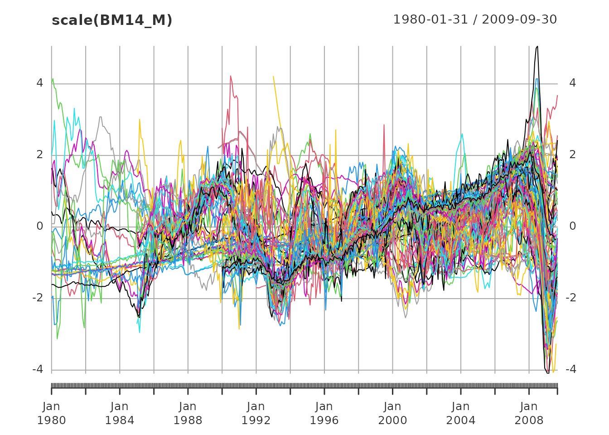
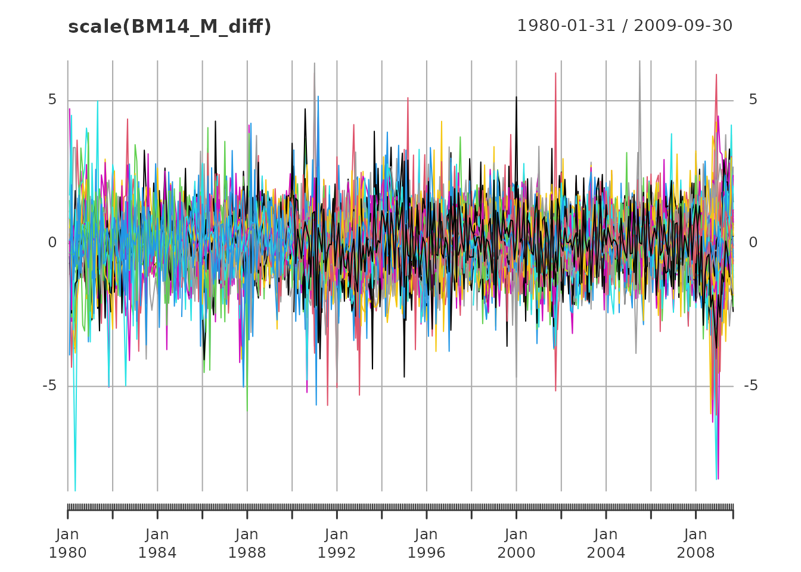
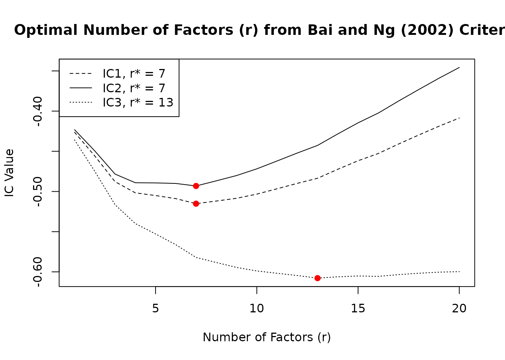
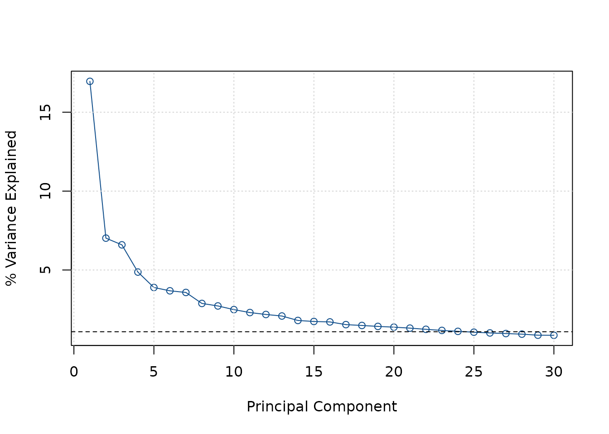
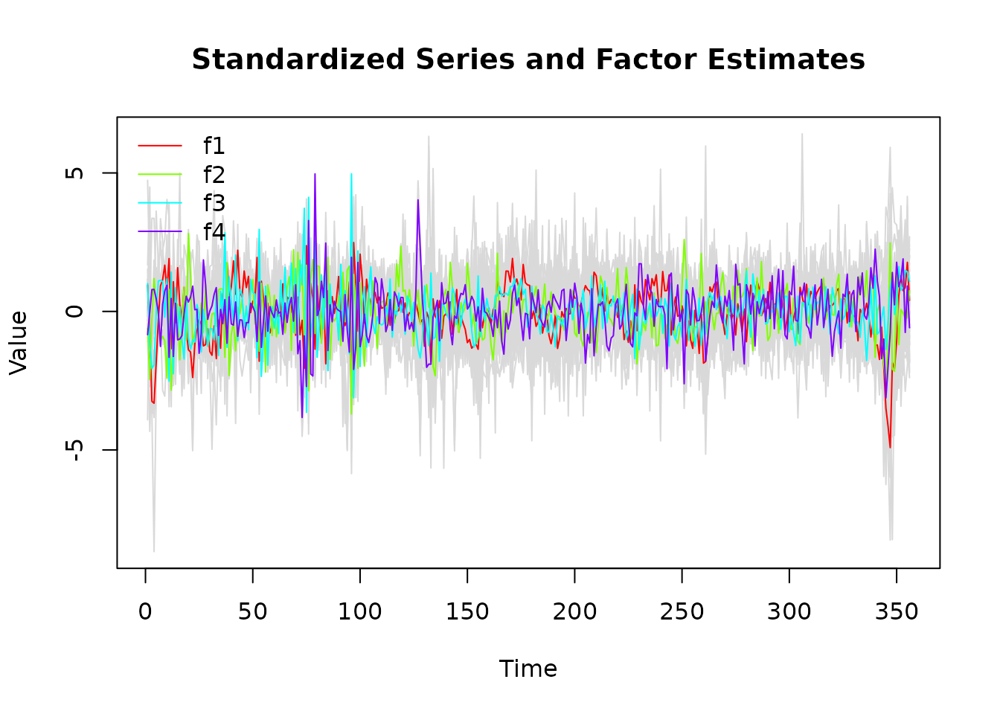
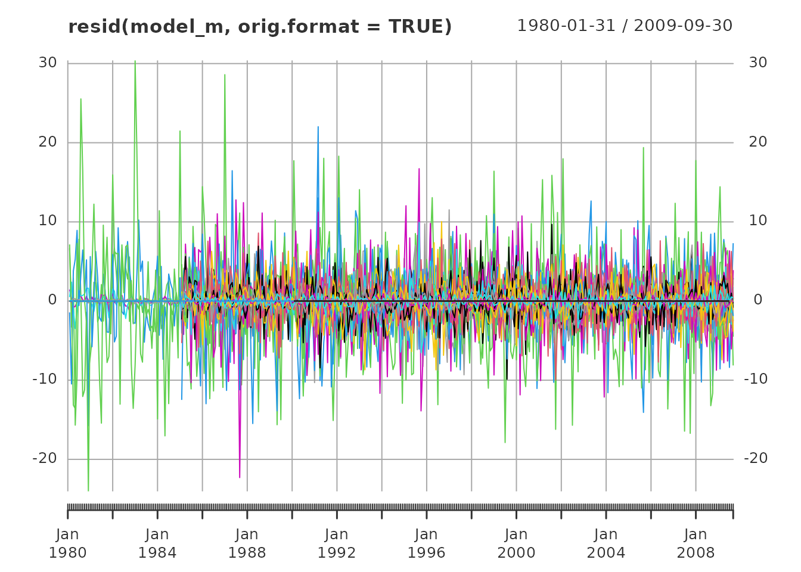
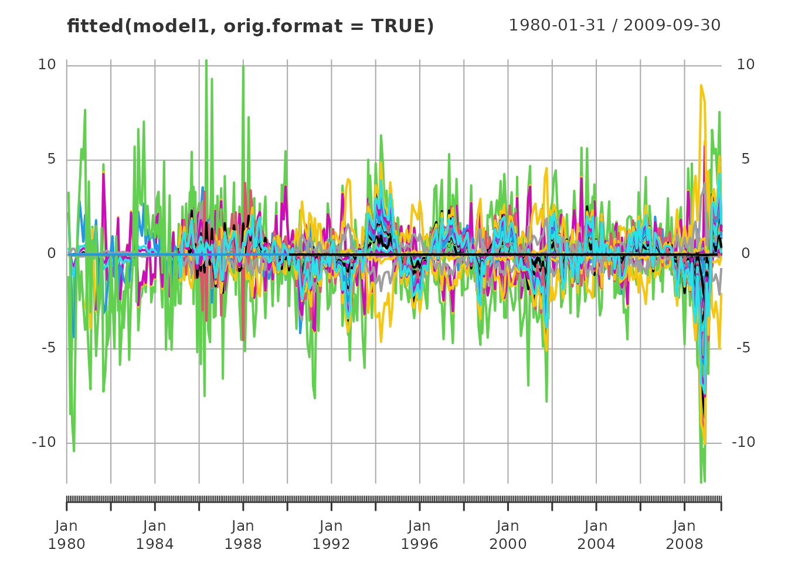
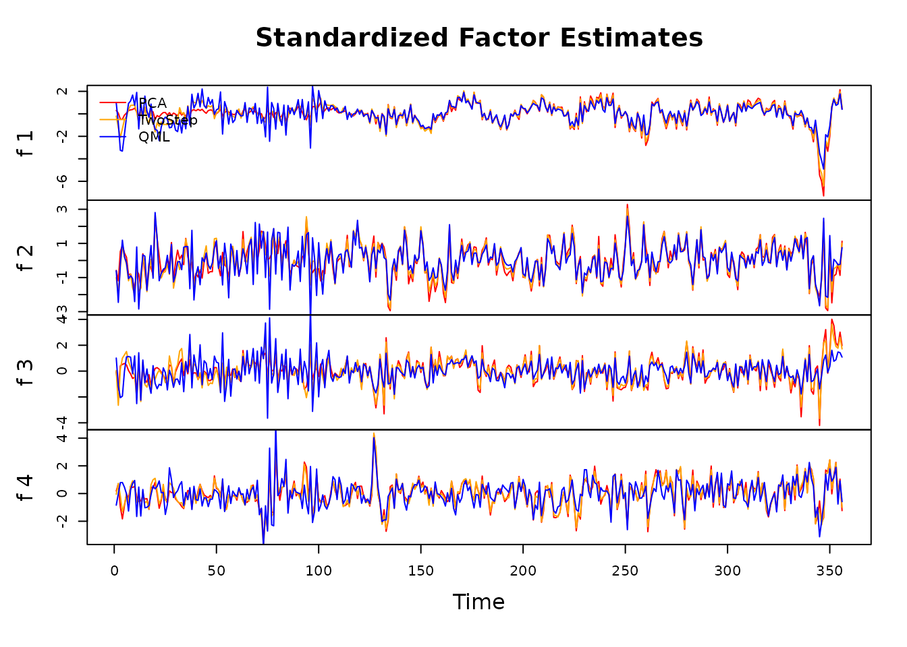
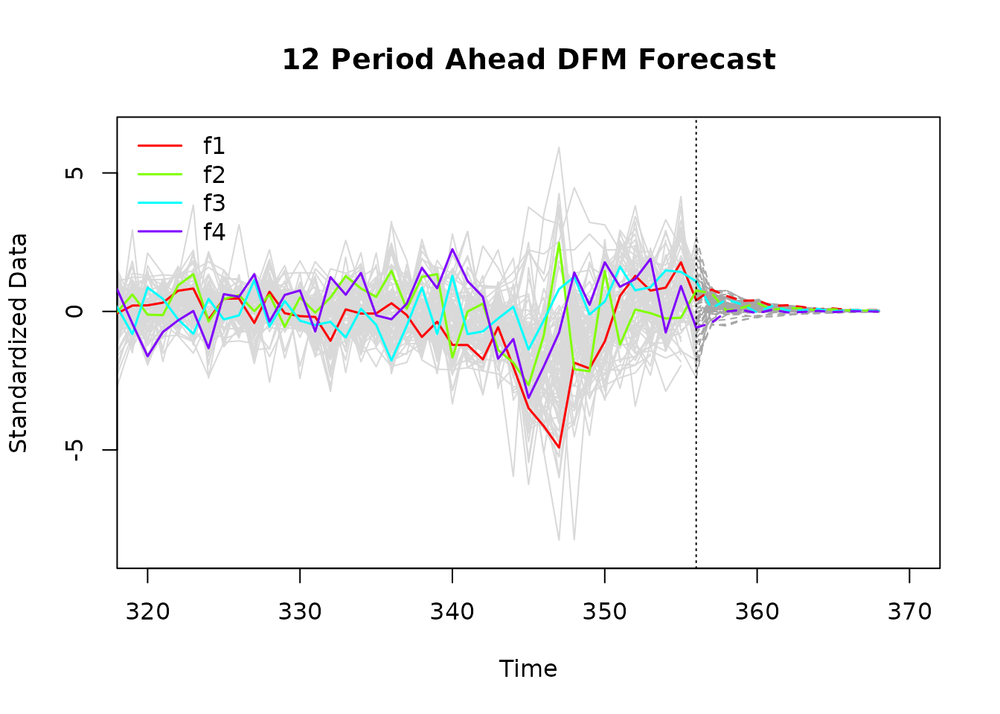
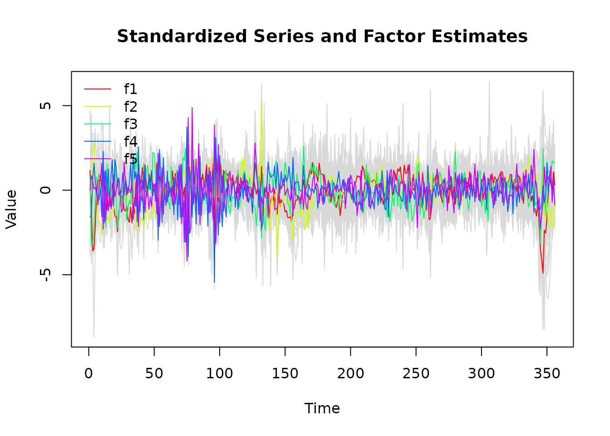

Introduction to dfms
Sebastian Krantz
2025-05-18
Source:vignettes/introduction.Rmd
introduction.Rmddfms provides a user friendly and computationally efficient approach to estimate linear Gaussian Dynamic Factor Models in R. The package is not geared at any specific application, and can be used for dimensionality reduction, forecasting and nowcasting systems of time series. The use of the package is facilitated by a comprehensive set of methods to explore/plot models and extract results.
This vignette walks through the main features of the package. The data provided in the package in xts format is taken from Banbura and Modugno (2014)1, henceforth BM14, and covers the Euro Area from January 1980 through September 2009.
# Using the monthly series from BM14
dim(BM14_M)
#> [1] 357 92
range(index(BM14_M))
#> [1] "1980-01-31" "2009-09-30"
head(colnames(BM14_M))
#> [1] "ip_total" "ip_tot_cstr" "ip_tot_cstr_en" "ip_constr"
#> [5] "ip_im_goods" "ip_capital"
plot(scale(BM14_M), lwd = 1)
The data frame BM14_Models provides information about
the series2, and the various models estimated by
BM14.
head(BM14_Models, 3)
#> series
#> 1 ip_total
#> 2 ip_tot_cstr
#> 3 ip_tot_cstr_en
#> label
#> 1 IP-Total Industry - Working Day and Seasonally Adjusted
#> 2 IP-Total Industry (Excluding Construction) - Working Day and Seasonally Adjusted
#> 3 IP-Total Industry Excluding Construction and MIG Energy - Working Day and Seasonally Adjusted
#> code freq log_trans small medium large
#> 1 sts.m.i5.Y.PROD.NS0010.4.000 M TRUE FALSE FALSE TRUE
#> 2 sts.m.i5.Y.PROD.NS0020.4.000 M TRUE TRUE TRUE TRUE
#> 3 sts.m.i5.Y.PROD.NS0021.4.000 M TRUE FALSE FALSE TRUE
# Using only monthly data
BM14_Models_M <- subset(BM14_Models, freq == "M")Prior to estimation, all data is differenced by BM14, and some series
are log, differenced, as indicated by the log_trans column
in BM14_Models. In general, dfms uses a stationary
Kalman Filter with time-invariant system matrices, and therefore expects
data to be stationary. Data is also scaled and centered3 in the main
DFM() function, thus this does not need to be done by the
user.
library(magrittr)
# log-transforming and first-differencing the data
BM14_M[, BM14_Models_M$log_trans] %<>% log()
BM14_M_diff <- diff(BM14_M)
plot(scale(BM14_M_diff), lwd = 1)
Determining the Structure of the Model
Before estimating a model, the ICr() function can be
applied to determine the number of factors. It computes 3 information
criteria proposed in Bai and NG (2002)4, whereby the second
criteria generally suggests the most parsimonious model.
ic <- ICr(BM14_M_diff)
#> Missing values detected: imputing data with tsnarmimp() with default settings
print(ic)
#> Optimal Number of Factors (r) from Bai and Ng (2002) Criteria
#>
#> IC1 IC2 IC3
#> 7 7 13
plot(ic)
Another option is to use a Screeplot to gauge the number of factors
by looking for a kink in the plot. A mathematical procedure for finding
the kink was suggested by Onatski (2010)5, but this is currently
not implemented in ICr().
screeplot(ic)
Based on both the information criteria and the Screeplot, I gauge
that a model with 4 factors should be estimated, as factors, 5, 6 and 7
do not add much to the explanatory power of the model. Next to the
number of factors, the lag order of the factor-VAR of the transition
equation should be estimated (the default is 1 lag). This can be done
using the VARselect() function from the vars
package, with PCA factor estimates reported by ICr().
# Using vars::VARselect() with 4 principal components to estimate the VAR lag order
vars::VARselect(ic$F_pca[, 1:4])
#> $selection
#> AIC(n) HQ(n) SC(n) FPE(n)
#> 6 3 3 6
#>
#> $criteria
#> 1 2 3 4 5 6
#> AIC(n) 5.810223 5.617282 5.427760 5.389413 5.407765 5.381829
#> HQ(n) 5.898758 5.776646 5.657953 5.690434 5.779614 5.824507
#> SC(n) 6.032560 6.017490 6.005838 6.145361 6.341582 6.493517
#> FPE(n) 333.696100 275.153456 227.671078 219.144228 223.265640 217.639133
#> 7 8 9 10
#> AIC(n) 5.409877 5.394900 5.421375 5.460761
#> HQ(n) 5.923383 5.979235 6.076538 6.186753
#> SC(n) 6.699434 6.862328 7.066673 7.283929
#> FPE(n) 223.956824 220.793226 226.933863 236.331677The selection thus suggests we should estimate a factor model with
r = 4 factors and p = 3 lags6. Before estimating the
model I note that dfms does not deal with seasonality in
series, thus it is recommended to also seasonally adjust data,
e.g. using the seasonal package before estimation. BM14 only
use seasonally adjusted series, thus this is not necessary with the
example data provided.
Estimation and Exploration
Estimation can then simply be done using the DFM()
function with parameters r and p7.
# Estimating the model with 4 factors and 3 lags using BM14's EM algorithm
model_m <- DFM(BM14_M_diff, r = 4, p = 3)
#> Converged after 26 iterations.
print(model_m)
#> Dynamic Factor Model: n = 92, T = 356, r = 4, p = 3, %NA = 25.8366
#>
#> Factor Transition Matrix [A]
#> L1.f1 L1.f2 L1.f3 L1.f4 L2.f1 L2.f2 L2.f3 L2.f4 L3.f1
#> f1 0.4720 -0.1297 0.8460 0.2098 -0.0733 -0.1436 -0.0595 0.1565 0.2356
#> f2 -0.1612 0.1699 0.2389 0.1598 0.0641 -0.1341 -0.0542 0.1287 0.1336
#> f3 0.3965 0.3264 0.0213 -0.3033 -0.1542 -0.0467 -0.1484 -0.0150 -0.1172
#> f4 0.1096 0.1601 -0.1578 0.2485 -0.0365 -0.0563 -0.0230 -0.1117 -0.0719
#> L3.f2 L3.f3 L3.f4
#> f1 -0.0803 -0.0386 0.0408
#> f2 0.1347 -0.0024 -0.0342
#> f3 -0.0087 0.1767 0.0249
#> f4 0.0307 0.0662 -0.0035
plot(model_m)
The model can be investigated using summary(), which
returns an object of class ‘dfm_summary’ containing the system matrices
and summary statistics of the factors and the residuals in the
measurement equation, as well as the R-Squared of the factor model for
individual series. The print method automatically adjusts the amount of
information printed to the data size. For large databases with more than
40 series, no series-level statistics are printed.
dfm_summary <- summary(model_m)
print(dfm_summary) # Large model with > 40 series: defaults to compact = 2
#> Dynamic Factor Model: n = 92, T = 356, r = 4, p = 3, %NA = 25.8366
#>
#> Call: DFM(X = BM14_M_diff, r = 4, p = 3)
#>
#> Summary Statistics of Factors [F]
#> N Mean Median SD Min Max
#> f1 356 -0.0448 0.3455 4.4505 -21.9265 11.0306
#> f2 356 -0.0319 -0.0892 2.68 -9.9549 7.4988
#> f3 356 -0.1032 -0.0593 3.2891 -12.0969 16.2455
#> f4 356 -0.0118 0.089 2.161 -8.2883 10.7219
#>
#> Factor Transition Matrix [A]
#> L1.f1 L1.f2 L1.f3 L1.f4 L2.f1 L2.f2 L2.f3 L2.f4 L3.f1
#> f1 0.4720 -0.1297 0.84605 0.2098 -0.07334 -0.14356 -0.05950 0.15645 0.2356
#> f2 -0.1612 0.1699 0.23889 0.1598 0.06406 -0.13413 -0.05415 0.12869 0.1336
#> f3 0.3965 0.3264 0.02128 -0.3033 -0.15424 -0.04669 -0.14839 -0.01495 -0.1172
#> f4 0.1096 0.1601 -0.15776 0.2485 -0.03655 -0.05626 -0.02304 -0.11169 -0.0719
#> L3.f2 L3.f3 L3.f4
#> f1 -0.080320 -0.038592 0.040812
#> f2 0.134692 -0.002391 -0.034215
#> f3 -0.008694 0.176663 0.024876
#> f4 0.030716 0.066201 -0.003465
#>
#> Factor Covariance Matrix [cov(F)]
#> f1 f2 f3 f4
#> f1 19.8067 2.0846* -3.4700* -2.1094*
#> f2 2.0846* 7.1822 -2.8725* -1.0631*
#> f3 -3.4700* -2.8725* 10.8182 1.9286*
#> f4 -2.1094* -1.0631* 1.9286* 4.6701
#>
#> Factor Transition Error Covariance Matrix [Q]
#> u1 u2 u3 u4
#> u1 9.0178 0.3303 -3.0764 -1.0182
#> u2 0.3303 5.4425 -1.3095 -0.5051
#> u3 -3.0764 -1.3095 7.0230 0.8639
#> u4 -1.0182 -0.5051 0.8639 3.8005
#>
#> Summary of Residual AR(1) Serial Correlations
#> N Mean Median SD Min Max
#> 92 -0.0409 -0.0782 0.2959 -0.5073 0.6858
#>
#> Summary of Individual R-Squared's
#> N Mean Median SD Min Max
#> 92 0.3712 0.299 0.2888 0.0067 0.9978
# Can request more detailed printouts
# print(dfm_summary, compact = 1)
# print(dfm_summary, compact = 0) Apart from the model summary, the dfm methods
residuals() and fitted() return observation
residuals and fitted values from the model. The default format is a
plain matrix, but the functions also have an argument to return data in
the original (input) format.


Another way to examine the factor model visually is to plot the
Quasi-Maximum-Likelihood (QML) factor estimates against PCA and Two-Step
estimates following Doz, Giannone and Reichlin (2011)8, where the Kalman
Filter and Smoother is run only once. Both estimates are also computed
by DFM() during EM estimation and can also be visualized
with plot.dfm.
plot(model_m, method = "all", type = "individual")
The plot with the various estimates shows that the QML estimates are
more volatile in the initial periods where there are many missing
series, but less volatile in the latter periods. In general, QML
estimates may not always be superior across the entire data range to
Two-Step and PCA estimates. Often, Two-Step estimates also provide
similar forecasting performance, and are much faster to estimate using
DFM(BM14_M_diff, r = 4, p = 3, em.method = "none").
The factor estimates themselves can be extracted in a data frame
using as.data.frame(), which also provides various options
regarding the estimates retained and the format of the frame. It is also
possible to add a time variable from the original data (the default is a
sequence of integers).
# Default: all estimates in long format
head(as.data.frame(model_m, time = index(BM14_M_diff)))
#> Method Factor Time Value
#> 1 PCA f1 1980-02-29 1.1503013
#> 2 PCA f1 1980-03-31 0.3374613
#> 3 PCA f1 1980-04-30 -1.4905337
#> 4 PCA f1 1980-05-31 -1.5360036
#> 5 PCA f1 1980-06-30 -0.2828433
#> 6 PCA f1 1980-07-31 0.3385403Forecasting
DFM forecasts can be obtained with the predict() method,
which dynamically forecasts the factors using the transition equation
(default 10 periods), and then also predicts data forecasts using the
observation equation. Objects are of class ‘dfm_forecast’.
# 12-period ahead DFM forecast
fc <- predict(model_m, h = 12)
print(fc)
#> 12 Step Ahead Forecast from Dynamic Factor Model
#>
#> Factor Forecasts
#> f1 f2 f3 f4
#> 1 3.4698 1.7276 0.2706 -0.9064
#> 2 2.4379 0.0305 1.3119 -0.0097
#> 3 1.6576 0.3182 0.7247 0.1037
#> 4 1.7445 0.7829 -0.2230 -0.1513
#> 5 0.8281 0.1390 0.5545 0.1199
#> 6 0.9576 0.3001 0.0126 -0.0923
#> 7 0.6599 0.2489 0.0333 -0.0518
#> 8 0.3354 0.0681 0.1999 0.0332
#> 9 0.4286 0.1824 -0.0830 -0.0672
#> 10 0.1853 0.0605 0.0882 0.0107
#> 11 0.1605 0.0544 0.0268 -0.0067
#> 12 0.1509 0.0734 -0.0288 -0.0235
#>
#> Series Forecasts
#> ip_total ip_tot_cstr ip_tot_cstr_en ip_constr ip_im_goods ip_capital
#> 1 0.7985 0.7887 0.8726 0.1194 0.7258 0.7111
#> ip_d_cstr ip_nd_cons ip_en ip_en_2 ip_manuf ip_metals ip_chemicals
#> 1 0.5883 0.5218 0.0374 0.0929 0.8833 0.5871 0.4322
#> ip_electric ip_machinery ip_paper ip_plastic new_cars orders
#> 1 0.7411 0.5961 0.4887 0.6648 -0.0008 0.5094
#> ret_turnover_defl ecs_ec_sent_ind ecs_ind_conf ecs_ind_order_book
#> 1 -0.0084 0.7389 0.6889 0.6802
#> ecs_ind_stocks ecs_ind_prod_exp ecs_ind_prod_rec_m ecs_ind_x_orders
#> 1 -0.4598 0.5100 0.4842 0.5767
#> ecs_ind_empl_exp ecs_cons_conf ecs_cons_sit_over_next_12 ecs_cons_exp_unempl
#> 1 0.5251 0.5918 0.5372 -0.4983
#> ecs_cons_gen_last_12m ecs_cstr_conf ecs_cstr_order_books ecs_cstr_empl_exp
#> 1 0.6448 0.3574 0.2607 0.3097
#> ecs_cstr_prod_recent ecs_ret_tr_conf ecs_ret_tr_bus_sit ecs_ret_tr_stocks
#> 1 0.2582 0.2149 0.1320 -0.0292
#> ecs_ret_tr_exp_bus ecs_ret_tr_empl ecs_serv_conf ecs_serv_empl_exp
#> 1 0.2545 0.1380 0.4420 0.3889
#> pms_comp_output pms_comp_empl pms_pmi pms_manuf_empl pms_manuf_output
#> 1 0.5143 0.4510 0.4805 0.5285 0.4470
#> pms_manuf_product pms_serv_out pms_serv_empl pms_serv_new_bus
#> 1 0.2551 0.4515 0.3026 0.4434
#> pms_serv_product urx empl_total empl_tot_xc empl_cstr empl_manuf
#> 1 0.2254 -0.4247 0.4582 0.2921 0.5706 0.3040
#> extra_ea_trade_exp_val intra_ea_trade_exp_val extra_ea_trade_imp_val
#> 1 0.3859 0.3464 0.1529
#> intra_ea_trade_imp_val us_ip us_urx us_empl us_retail_sales
#> 1 0.3410 0.3363 -0.3407 0.2387 0.1015
#> us_ip_manuf_exp us_cons_exp us_r3_m us_r10_year
#> 1 0.0451 0.0759 0.2387 0.1474
#> [ reached 'max' / getOption("max.print") -- omitted 11 rows and 22 columns ]These forecasts can also be visualized using a plot method. By default the entire series history is plotted along with the forecasts, thus it is often helpful to restrict the plot range. As with any stationary autoregressive model, the forecasts tend to zero quite quickly9.

By default, predict() uses the QML factor estimates (if
available). We can however also predict with PCA or TwoStep estimates
using, e.g., predict(model_m, h = 12, method = "2s").
The forecasts can be retrieved in data frame using
as.data.frame(). Again the method has various arguments to
control the output (factors, data, or both — default factors) and the
format of the frame.
# Factor forecasts in wide format
head(as.data.frame(fc, pivot = "wide"))
#> Time Forecast f1 f2 f3 f4
#> 1 1 FALSE 4.207651 -1.6552707 3.2190834 -1.82663141
#> 2 2 FALSE -3.656458 -6.6178403 -3.9121446 -0.05762001
#> 3 3 FALSE -14.486337 -0.6573393 -6.8663850 1.69525122
#> 4 4 FALSE -14.794458 3.1573790 -6.4820328 1.70916785
#> 5 5 FALSE -8.191696 0.5563773 -0.1840816 0.98407541
#> 6 6 FALSE -1.357927 -0.3805697 3.5068964 -0.05346754Estimation with Mixed Frequency
Since v0.3.0, dfms allows monthly and quarterly mixed
frequency estimation following Mariano & Murasawa (2003) and Banbura
& Modugno (2014). Quarterly variables should be to the right of the
monthly variables in the data matrix and need to be indicated using the
quarterly.vars argument. Quarterly observations should be
provided every 3rd period (months 3, 6, 9, and 12). Below, I estimate
the mixed frequency DFM, adding a factor to capture any idiosynchratic
dynamics in the quarterly series.
# Quarterly series from BM14
head(BM14_Q, 3)
#> gdp priv_cons invest export import empl prductivity
#> 1980-03-31 1092266 639100.2 238798.3 212326.1 208414.9 118296.6 NA
#> 1980-06-30 1087137 635191.5 234788.5 203062.0 202807.3 118366.6 NA
#> 1980-09-30 1086518 639791.6 233879.2 200720.5 204375.7 118370.7 NA
#> capacity gdp_us
#> 1980-03-31 NA 5908.5
#> 1980-06-30 NA 5787.4
#> 1980-09-30 NA 5776.6
# Pre-processing the data
BM14_Q[, BM14_Models$log_trans[BM14_Models$freq == "Q"]] %<>% log()
BM14_Q_diff <- diff(BM14_Q)
# Merging to monthly data
BM14_diff <- merge(BM14_M_diff, BM14_Q_diff)
# Estimating the model with 5 factors and 3 lags using BM14's EM algorithm
model_mq <- DFM(BM14_diff, r = 5, p = 3, quarterly.vars = colnames(BM14_Q))
#> Converged after 36 iterations.
print(model_mq)
#> Mixed Frequency Dynamic Factor Model
#> n = 101, nm = 92, nq = 9, T = 356, r = 5, p = 3
#> %NA = 29.7363, %NAm = 25.8366
#>
#> Factor Transition Matrix [A]
#> L1.f1 L1.f2 L1.f3 L1.f4 L1.f5 L2.f1 L2.f2 L2.f3 L2.f4
#> f1 0.5038 -0.3564 0.5465 -0.4369 0.3457 -0.0386 0.1857 -0.2352 -0.0717
#> f2 -0.1115 0.4626 -0.1170 -0.0510 0.1261 0.0709 -0.0237 0.0141 -0.0754
#> f3 0.2327 0.0712 0.3584 0.0882 -0.1481 -0.0833 -0.0375 -0.2140 0.1724
#> f4 -0.2951 -0.1211 0.1017 -0.1605 0.4420 0.0247 -0.0919 0.0098 -0.1271
#> L2.f5 L3.f1 L3.f2 L3.f3 L3.f4 L3.f5
#> f1 0.1943 0.2306 0.0015 -0.0119 0.0413 0.1004
#> f2 0.1047 0.1460 0.2557 0.0895 -0.0834 0.0474
#> f3 -0.0337 -0.0337 -0.0986 0.1048 0.1325 -0.0781
#> f4 0.1374 0.0543 -0.0733 -0.0256 0.0902 -0.0382
#> [ reached 'max' / getOption("max.print") -- omitted 1 row ]
plot(model_mq)
Additional Functions
dfms also exports central functions that help with DFM
estimation, such as imputing missing values with
tsnarmimp(), estimating a VAR with .VAR(), or
Kalman Filtering and Smoothing with SKFS(), or separately
with SKF() followed by FIS(). To my knowledge
these are the fastest routines for simple stationary Kalman Filtering
and Smoothing currently available in R. The function
em_converged() can be used to check convergence of the
log-likelihood in EM estimation.
dfms also exports a matrix inverse and pseudo-inverse from
the Armadillo C++ library through the functions ainv() and
apinv(). These are often faster than solve(),
and somewhat more robust in near-singularity cases.
Conclusion and Outlook
dfms provides a simple but robust and powerful implementation of dynamic factors models in R. For more information about the model consult the theoretical vignette.
Other implementations more geared to economic nowcasting applications
are provided in R packages nowcasting and
nowcastDFM.
More general forms of autoregressive state space models can be fit using
MARSS.
For large-scale nowcasting models, the DynamicFactorMQ
class in the statsmodels Python library provides a robust and
performant implementation.
In the future, a simple news() function following
Banbura and Modugno (2014) may be added to dfms to evaluate the
impact of new observations on model predictions. In general, my time on
this package is very limited, but the original Matlab codes of Banbura
and Modugno (2014) are in the
repo. Thus, impatient users are also very welcome to do advances and
submit PRs.
References
Doz, C., Giannone, D., & Reichlin, L. (2011). A two-step estimator for large approximate dynamic factor models based on Kalman filtering. Journal of Econometrics, 164(1), 188-205.
Doz, C., Giannone, D., & Reichlin, L. (2012). A quasi-maximum likelihood approach for large, approximate dynamic factor models. Review of Economics and Statistics, 94(4), 1014-1024.
Banbura, M., & Modugno, M. (2014). Maximum likelihood estimation of factor models on datasets with arbitrary pattern of missing data. Journal of Applied Econometrics, 29(1), 133-160.
Mariano, R. S., & Murasawa, Y. (2003). A new coincident index of business cycles based on monthly and quarterly series. Journal of Applied Econometrics, 18(4), 427-443.
Bai, J., Ng, S. (2002). Determining the Number of Factors in Approximate Factor Models. Econometrica, 70(1), 191-221.
Onatski, A. (2010). Determining the number of factors from empirical distribution of eigenvalues. The Review of Economics and Statistics, 92(4), 1004-1016.
Stock, J. H., & Watson, M. W. (2016). Dynamic Factor Models, Factor-Augmented Vector Autoregressions, and Structural Vector Autoregressions in Macroeconomics. Handbook of Macroeconomics, 2, 415–525.